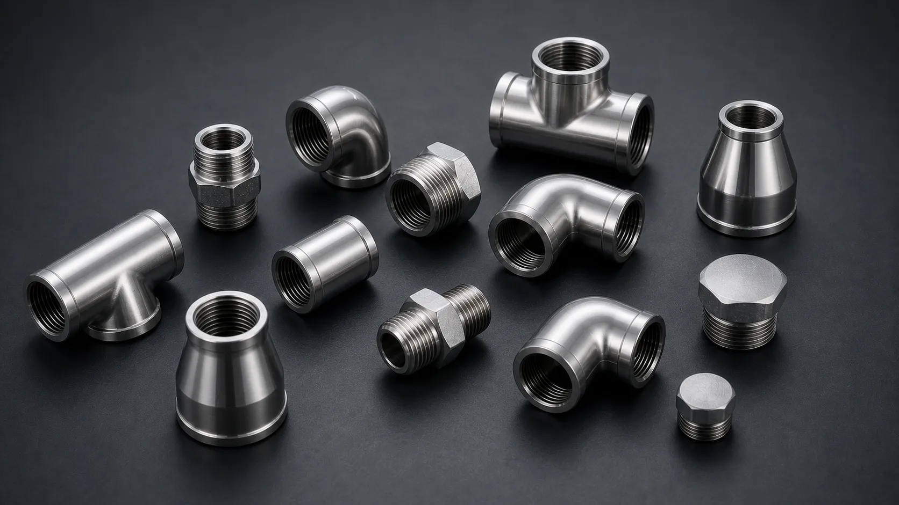

Gururaj Infradesigns manufactures and supplies Stainless Steel 304 and 304L Pipe Fittings including elbows, tees, reducers, pipe caps, stub ends, and crosses in ASTM A403 WP304 and WP304L grades for food processing, water treatment, pharmaceutical, and industrial piping applications.
Stainless Steel 304 Pipe Fittings are among the most widely used piping components across industrial sectors due to their excellent corrosion resistance, durability, and versatility. Gururaj Infradesigns is a trusted Stainless Steel 304 Pipe Fittings Manufacturer in India, supplying high-quality fittings for process piping systems, fabrication projects, chemical plants, food processing facilities, and general industrial applications.
We also supply Stainless Steel 304L Pipe Fittings, a low-carbon variation of Grade 304 that offers improved weldability and reduced risk of carbide precipitation during welding. As a reliable manufacturer and supplier, we provide a comprehensive range of elbows, tees, reducers, pipe caps, stub ends, and crosses manufactured to meet stringent industrial requirements.

Stainless Steel 304 and 304L are austenitic stainless steel grades containing chromium and nickel, providing excellent resistance to corrosion in a wide range of environments. These grades are known for their ease of fabrication, good mechanical strength, and ability to perform reliably in both indoor and outdoor applications.
As a specialized grade within the broader range of Stainless Steel Pipe Fittings, 304 and 304L fittings are commonly selected for applications involving water, chemicals, food products, and industrial process fluids. For applications requiring enhanced resistance to chlorides and aggressive chemicals, industries often consider Stainless Steel 316 Pipe Fittings, while Stainless Steel 310 Pipe Fittings are frequently chosen for elevated-temperature service conditions.
| Parameter | Details |
|---|---|
| Material Grades | ASTM A403 WP304, ASTM A403 WP304L |
| Product Types | Elbow, Tee, Reducer, Pipe Cap, Stub End, Cross |
| Standards | ASTM, ASME, ANSI, MSS SP |
| Size Range | ½" NB to 48" NB |
| Schedule Range | SCH 10 to SCH XXS |
| Manufacturing Process | Seamless & Welded |
| Connection Type | Butt Weld |
| Testing | PMI, Hydro Test, Visual Inspection |
| Certification | EN 10204 3.1 / MTC Available |
Stainless Steel 304 and 304L Pipe Fittings provide reliable resistance to atmospheric corrosion, moisture, and a wide range of industrial chemicals. Their corrosion-resistant properties make them suitable for long-term use in process piping and fluid handling systems.
The low-carbon content of 304L minimizes the risk of carbide precipitation during welding, making it ideal for fabricated piping systems. Both grades can be easily welded and integrated into complex industrial installations.
These fittings offer an excellent balance of mechanical strength and toughness, helping maintain system integrity under varying operating conditions. Their durability contributes to reduced maintenance and longer service life.
From food processing facilities to chemical plants and water treatment systems, 304 and 304L pipe fittings are trusted across diverse industries due to their adaptability, ease of fabrication, and dependable performance.
| Element | 304 (%) | 304L (%) |
|---|---|---|
| Carbon | Max 0.08 | Max 0.03 |
| Chromium | 18.0 – 20.0 | 18.0 – 20.0 |
| Nickel | 8.0 – 10.5 | 8.0 – 12.0 |
| Manganese | Max 2.0 | Max 2.0 |
| Silicon | Max 1.0 | Max 1.0 |
| Phosphorus | Max 0.045 | Max 0.045 |
| Sulfur | Max 0.030 | Max 0.030 |
| Property | 304 | 304L |
|---|---|---|
| Tensile Strength | 515 MPa Min | 485 MPa Min |
| Yield Strength | 205 MPa Min | 170 MPa Min |
| Elongation | 40% Min | 40% Min |
| Hardness | 92 HRB Max | 92 HRB Max |
The hygienic surface and corrosion resistance of Stainless Steel 304 and 304L make these fittings suitable for food manufacturing, dairy processing, breweries, and beverage production systems where cleanliness is essential.
These fittings are widely used in municipal and industrial water treatment facilities for transporting water and process fluids while maintaining durability and resistance to corrosion.
Stainless Steel 304L Pipe Fittings are commonly specified for pharmaceutical and healthcare applications because of their weldability, ease of cleaning, and suitability for sanitary process systems.
Many industrial plants utilize 304 and 304L pipe fittings for handling chemicals, process fluids, and utility services. Their combination of strength, corrosion resistance, and fabrication ease makes them a practical choice for general process piping.
| Grade | Key Characteristics | Typical Applications |
|---|---|---|
| SS 304 & 304L | Excellent corrosion resistance and weldability | Food Processing, Water Treatment |
| SS 310 | Better elevated-temperature performance | Furnaces, Heat Treatment Plants |
| SS 316 & 316L | Improved resistance to chlorides and chemicals | Marine, Chemical Processing |
| SS 347 | Enhanced resistance to intergranular corrosion at higher temperatures | Power Generation, Process Industries |
Stainless Steel 304 and 304L are considered the most versatile grades for general-purpose industrial applications. While Stainless Steel 316 Pipe Fittings offer improved corrosion resistance in chloride-rich environments, Stainless Steel 347 Pipe Fittings are often selected for higher-temperature service where long-term stability is important.
Gururaj Infradesigns supplies Stainless Steel 304 and 304L Pipe Fittings in a wide range of sizes, schedules, and specifications to support diverse industrial piping requirements. Our products are used across process industries, fabrication projects, utility systems, and infrastructure developments where reliable flow management and long-term performance are essential.
As a trusted supplier, we work closely with EPC contractors, fabricators, engineering companies, and industrial buyers to provide quality piping components backed by technical support, consistent product availability, and timely delivery for project and maintenance requirements.
Quality is an integral part of our manufacturing and supply process. All Stainless Steel 304 and 304L Pipe Fittings undergo inspection for dimensional accuracy, material integrity, surface finish, and compliance with applicable industry standards to ensure dependable performance in service.
As an ISO Certified Company, we are committed to maintaining consistent quality standards and supplying reliable piping solutions that meet the expectations of industrial, commercial, and engineering applications.
Selecting the right Stainless Steel 304 or 304L Pipe Fittings depends on factors like temperature, pressure, corrosion exposure, and application requirements. Proper grade selection ensures long-term performance and system reliability. Our team assists in choosing the right fitting type, size, and specification based on your project needs. We help EPC contractors, fabricators, and industrial buyers with practical and application-based technical guidance.